The Knowledge-as-a-Service platform that makes territorial economic futures navigable, measurable, and actionable.
The lack of integrated predictive models limits the ability to anticipate future scenarios. Traditional GIS delivers only historical analysis and static maps — no predictive capability.
Where decision-makers get stuck today — and what Chorema makes decidable.
Decision-makers' questions cut across space, time, and economics. Each tool covers only one dimension.
Static visualizations, rigid administrative boundaries, no predictive capability. They snapshot the past.
One-shot PDFs, annual reports, high cost, not updatable in real time, no sub-municipal granularity.
No territorial granularity, untraceable sources, high hallucination risk on vertical domains.
To plan the economic futures of territories. Answers anchored to a proprietary Data Lake — not LLM memory.
Urban, climate, health, migration, hydrogeological risk, air quality, transport, biodiversity — each with dedicated AI agents and curated data.
Built on 84,000+ geospatial indicators. A co-developed subset is scientifically validated with universities — Aalborg, LUM, Università di Bari, Politecnico di Milano. Custom indices via Index Crafter.
Coordinator → vertical experts → critic agent flagging gaps and hallucinations. Grounded in the proprietary Data Lake.
Verticals share the same engine and Data Lake. Every new vertical makes the whole platform denser for everyone.
European KaaS for medium-term labour-mismatch forecasting. Migration corridors Colombia–Italy, Tunisia–Italy. CEDEFOP, Eurostat, Excelsior data.
Predictive IIoT intelligence, early warning < 60 seconds. Sensors integrated with geospatial data for territorial resilience and environmental monitoring.
4,700+ health indicators (Health4All) cross-referenced with Copernicus. Health profile by address at sub-municipal scale.
"In which Piedmont provinces will demand for IT technicians be highest in 2025–29, and which Colombia–Italy corridors are most feasible in terms of qualification recognition?"
→ The difference isn't in the model. It's in the underlying knowledge infrastructure.
Each datapoint is tagged by source and reliability — auditable in due diligence and in production. This is what separates curated knowledge from a confident guess.
| Datapoint | Primary sources | Method | Confidence |
|---|---|---|---|
| IT-technician skill demand · 2025–29 | CEDEFOP · Excelsior · Eurostat | Observed + trend model | High |
| Corridor feasibility · Colombia–Italy | IOM · diaspora registries | Qualification-recognition mapping | Medium |
| Expansion vs replacement demand | Chorema labour model | Negative intelligence (modeled) | Modeled |
| Hydrogeological risk · sub-municipal | Copernicus · ISPRA | Observed geospatial | High |
→ A critic agent flags gaps before they reach the user. Reliability is a first-class output, not an afterthought.
The edge isn't in the LLM — those converge. It's in the knowledge infrastructure beneath them.
84,000+ curated geospatial indicators, GeoParquet/Parquet, continuous ETL. 5+ years of editorial curation, not replicable in 6 months.
80+ indices, a co-developed subset validated with universities. Each index is IP: domain expertise + scientific validation.
Structural partnerships with Aalborg, LUM, Università di Bari, Politecnico di Milano. The research pipeline feeds the product pipeline.
13 agents with curated tools. Each agent is a vertical LLM "trained" on Chorema data. Not replicable with a prompt.
⇢ Every asset compounds: more data → better indices → more precise answers → more clients → more data.
Not a prototype: already in production with national institutions and energy operators — on audited, filed financials.
PNRR intelligence built for the Ministry of Infrastructure & Transport (MIT) — €40B, ~1,600 projects — resold to Regione Puglia on a different question with near-zero marginal setup.
Three segments with structural regulatory drivers. Chorema 3-year SAM: €20–30M / year.
20 regions · 14 metro cities · 107 provinces · 500 municipalities with spending capacity.
20–30 insurers · utilities · top 50 real-estate developers · exposed banks.
150 DMOs · cultural foundations · 20 regional labour agencies · IOM, UN.
We create the category that doesn't exist: sub-municipal space × prospective time × agentic AI.
| Player | Category | Sub-municipal space | Prospective time | Economics + AI | Format |
|---|---|---|---|---|---|
| ESRI / ArcGIS | Enterprise GIS | Yes | No | No | Software |
| CARTO / Placer.ai | Location intelligence | Yes | No | No | Cloud SaaS |
| Deloitte / McKinsey Foresight | Foresight consulting | No | Yes | No | PDF reports |
| Oxford Economics | Macro projections | No | Yes | No | Dataset |
| AlphaGeo (US) | Climate risk geo | Yes | Partial | No | SaaS |
| Chorema | Geospatial Futures | Yes | Yes | Yes | KaaS |
Three reinforcing revenue streams: recurring license, partnerships, API marketplace.
Annual license on the knowledge infrastructure: platform, agents, Data Lake, curated indices, continuous updates. Tiered Basic → Enterprise.
Co-design of sector-specific indices with academic validation (Aalborg, LUM, Università di Bari, Politecnico di Milano). Applied research with public & private bodies.
Metered API calls for programmatic access to curated indices and datasets — the "Netflix of territorial big data" for developers. H1 2027 roadmap.
20+ years founder and strategic advisor. Independent Expert, EU Commission (Horizon Europe). Co-author of Futures Thinking (Routledge, 2026).
Serial entrepreneur and Associate Professor, Aalborg University. Visiting researcher at Harvard, Stanford, MIT (Cambridge, USA). Co-author of 8 books and 100+ scientific publications.
Leads marketing, institutional partnerships, and business development. Co-author of Costruire il futuro (2026). Coordinates the international futures-intelligence cluster.
Pre-money €5M · post-money €6.2M · runway ~24 months · operating break-even Q4 2027.
The future doesn't wait — it's anticipated. Let's build the category that doesn't exist yet.